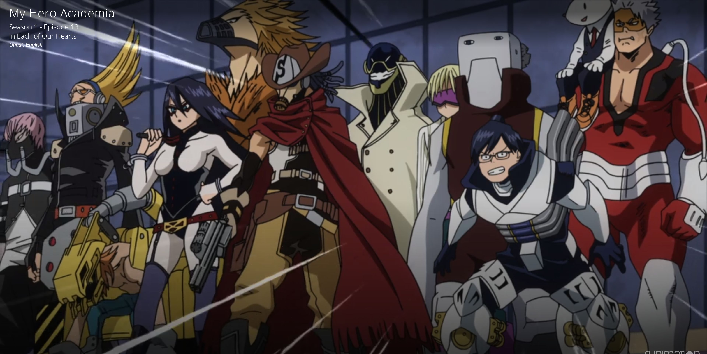
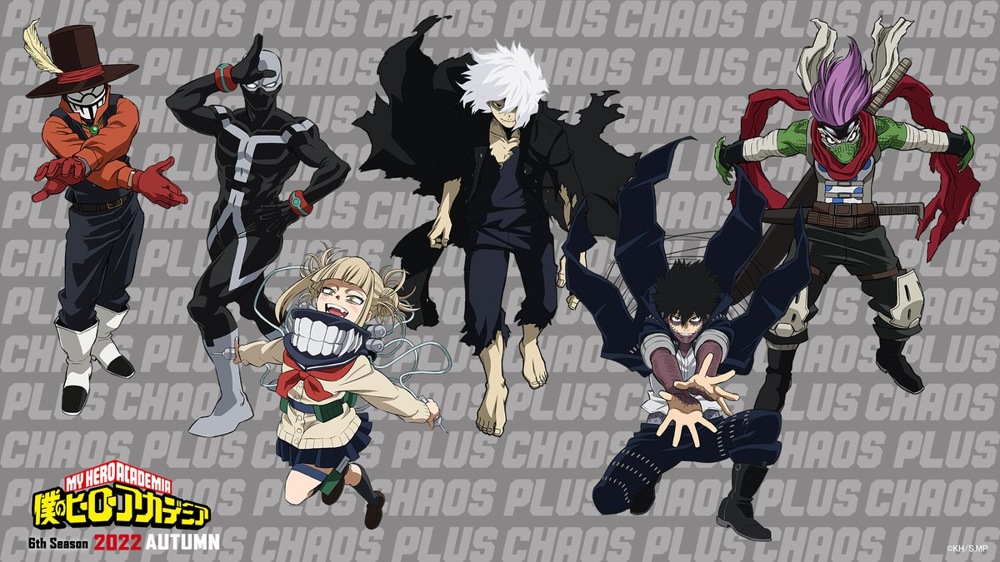

Welcome to My Hero Academia Universe
Welcome to the ultimate fan destination for My Hero Academia! Immerse yourself in the thrilling story of Izuku Midoriya and his journey from a quirkless dreamer to the symbol of hope. Whether you're a long-time fan or new to the world of heroes, this is your gateway to everything My Hero Academia.
Meet the Heroes
Step into the shoes of Class 1-A students at U.A. High School as they train to become Pro Heroes. Explore profiles of fan-favorite characters like Deku, Bakugo, Todoroki, and Uraraka, and learn about their quirks, battles, and growth.
Meet the Characters
- Izuku Midoriya (Deku):A once quirkless boy with an unshakable desire to become a hero. Handpicked by All Might, Deku inherits the power of One for All and works tirelessly to master it while protecting those in need.
- Katsuki Bakugo (Kacchan): Hot-headed and fiercely determined, Bakugo is a powerhouse of ambition and skill. Despite his brash nature, he aims to be the strongest hero and respects the path of true heroism deep down.
- Shoto Todoroki: The son of the #2 hero, Endeavor, Todoroki wields both fire and ice but struggles with his family legacy. His journey is one of acceptance and finding his own path to heroism.
- Ochaco Urarake: Bright and cheerful, Uraraka aims to be a hero to support her family financially. Her ability to nullify gravity showcases her resourcefulness and determination.
Unmask the Villains
Delve into the dark side of the story. Discover the motivations behind the League of Villains, All for One, and the ever-dangerous Tomura Shigaraki. Can the heroes rise to the challenge?
